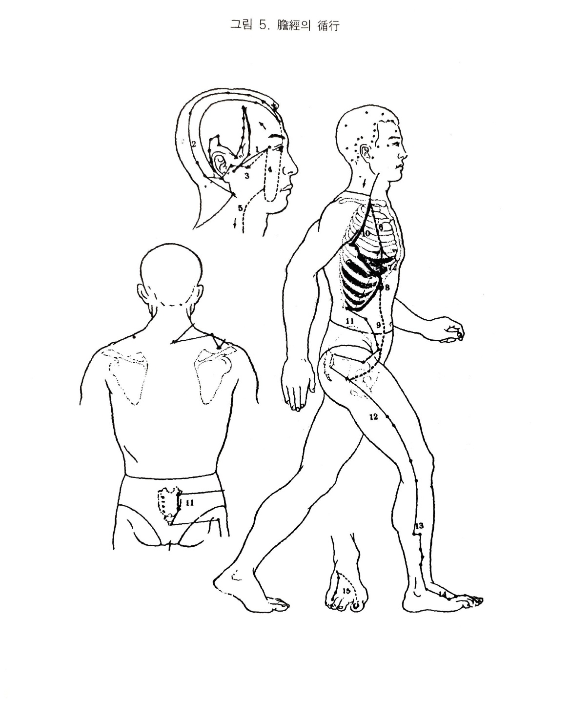

족소양담경
2. 족소양댬경
1) 족소양담경의 순행
담경의 경맥은 삼초경의 지락에 연결되어 외안각에서 기시하는데, 청회에서 두각으로 상행하여 이후의 완골에 이르고 롼골에서 꺾어 올라가 각손(삼초경)을 지나 청명(방광경)에 이른다. 여기서 다시 상행하여 임읍.뇌공을 지나 풍지에 이른다. 경부를 지나 삼초경의 앞으로 내려와 견상에서 견정을 지나 대추(독맥).예풍(소장경)을 돌아 결분에 이른다. 본경은 액하로 내려와 측흉을 거쳐 일월을 지나 계협으로 해서 경문.대맥.거료를 지나 상료(방광경).중료.장강(독맥)에 들어가 환도에 이른다. 양릉천으로 내려가 절골을 거쳐 임읍.규음에 이르러 그친다.
지락의 하나는 이후에서 예풍(삼초경)을 지나 이중으로 진입한 후 이전으로 나와 외안각의 동자료에 이르고, 또 다른 지락은 동자료에서 대영으로 내려와 안정하에 이르러 협차를 지나 경부에 이르러 결분에서 회합한 다음, 흉중으로 하행하여 천지(심포경)를 지나 기문에서 간으로 연결되고 일월에서 담으로 속한다. 장문에 연결되어 기충(위경)을 지나 환도에 연결된다. 족임읍에서 분락이 발등을 돌아 제일지으 간경 기시부에 이어진다.
2) 간경의 병증
(1) 호흡기계
담경병이 되면 담기가 승발하지 못하는데 한숨을 쉬어 승발하게 한다. 그러므로 담기가 허해도 한숨을 쉬고 담기가 실해도 한숨을 쉰다.
호흡불순인 경우에는 한숨.딸꾹질.하품.재채기 등의 증상이 있는데 한숨인 경우는 심경.담경병이고 재채기를 하는 경우는 폐경병이며 하품을 하는 경우는 위경병이다. 그러면 태식에서 심경병인지의 구별은 수반증상을 살피면 된다. 담경에서 나오는 태식이면 청색이거나 목극토로 소화가 되지 않거나 협통.근통이 있거나 놀래거나 편두통이 있거나 기타 담경병증이 또 있을 것이고, 심경에서 오는 태식이라면 면적.심장열.한출.설강.정충.자주 웃거나 제상동계가 있거나 하는 심경병증이 병발되어 있다.. 담이 허한하면 소장경 특유의 한열왕래가 있고, 담실열에는 선뜩선뜩한 오한이 있다.
(2) 소화기계
담병인 경우는 자주 황색의 담즙을 토하며 담이 허냉하면 산수를 토한다. 황달이 발생하여 눈이 노랗게 되고 목극토하니 소화가 되지 않는다. 원전에는 담허에만 목황이라 하였고 담실에는 음식불하라 하였으나 목황도 음식불하도 모두 담병이다.. 그러나 허실은 때에 따라 감별해야 된다.
(3) 순환기계
담은 영위를 유행시키니, 허한하면 두현.궐위.강부.실정황황한다.
(4) 흉협복통류
족소양담경은 풍지에서 경부를 지나 견정에서 대추.예풍을 거쳐 결분에 이르는데, 여기서 곧장 내려가는 것은 측흉부에서 계근으로 가며, 지락은 결분에서 흉중으로 하행하여 천지혈에서 기문으로 가므로 그노선상에서 심통.흉통.협통.계근통.결분통.경근급.복중기만 등의 증상이 나타난다.
(5) 운동기계
담즙이 오장의 정즙이니 모든 근을 담액이 자양한다.
담경에 병사가 생기면 모든 근.관절에 불인.종.통이 온다.
담경의 노선상에서 박.결분.항.요.슬.제4지.비.외과 등에 통증이 온다.
담액이 공급되지 않으면 근이 무력해지니, 담허하면 다리가 야위어 무력 하거나 절뚝거리게 되고 제4지도 그 기능을 잃는다.
담의 사기가 성해도 담액이 원활하게 공급되지 아니하고 다리를 절거나 무력해지거나 열이 나거나 땅기거나 뻣뻣해진다.
(6) 안이비인후구계
담경락이 외안각인 동자료에서 시작하여 이후를 돌아 전액 안정혈까지 왔다가 풍지.예풍에 이중-이전으로 나오고 있으니 담병에 목예자통하고 폭성이호하며 간담의 규가 눈이므로 허하면 눈이 흐려지고, 그 오액이 루이므로 눈물을 흘린다. 본경은 풍지에서 견정으로 지락은 동자료.대영.협차.결분으로 돌고 있으니 담경에 병사가 있으면 인건.인종.익중개개연한다. 담즙이 쓰므로 구고하고 담에 사기가 있으면 자주 침을 뱉으며 실열에는 비연이 발생한다.
(7) 비뇨기계.생식기계
간경이 음기를 돌아 중극.관원으로 거쳐가니, 간의 표리인 담병인 경우에 소변이 나오지 않았다. 담액은 오장지정즙으로 영위를 유행시키는데, 담이 허한하면 실정이 발생한다.
(8) 정신계
간담경의 색체에서 오지는 노이다.
간실하면 노하기 쉬우나 담허하면 심하가 두근거리고 누군가가 잡으러 오는 듯 두려워하며 잠이 오지 않는다. 그러나 실하면 잠이 많이 오고 전간도 생기는 수가 있다. 그 경락이 측두부 후두부를 돌고 있으므로 두현이 발생한다.
(9) 기타
담즙이 오액정즙이니 담허하거나 실열하면 원활하게 돌지 못하니 얼굴에 먼지가 낀 것 같다.
담실사로 영양즙이 마르면 몸에 기름기가 없어진다.
머리칼이 담의 영양과 방광경이 합쳐 되는데 담병이 되면 발조한다.
담에 열이 모이면 음식이 들어가 그대로 통과하여 영양분이 흡수되지 않아 살이 찌지 않는다.
그 경락의 지락이 협차를 지나가므로 함종하며 간담이 근을 기르되 악혈도 생길 수 있으므로 담경상의 결분혈(위경) 양액에 멍울이 생긴다.

오수혈
규음(정,금)
제4지외측의 조갑의 각에서 1푼 떨어진 곳이다. 본혈은 금혈인 연고로 가슴이 아프든가 기침이 나는 호흡기질환에 유효하고 안질, 기타 가슴이 답답하거나 손발에 번열이 나는 열성증후외에 수족의 운동장해에도 쓰여진다.
협계(형,수)
넷째 발가락 바깥쪽을 발가락 끝에서 관절쪽으 밀어가면 관절조금 앞에서 걸리는 골함중이 있으니 그곳이 협계혈이므로 제4지 본관절의 외측전함중이 협곙 후함중이 지오회가 된다. 협계혈은 목경중의 수혈이므로 담낭이나 담경상의 허증에 보하는 혈이요 해열발한의 작용도 있는 혈이다. 또한 눈이 침침하든가 볼이나 목이 붓는증세, 근막염, 난청, 발열증세 등에도 쓰이는 혈이다.
족임읍(수,목)
넷째와 다섯째 발가락 사이를 발끝에서 발목쪽으로 밀어 올라가면 두 중족골이 합쳐서 막히는 곳이 혈이나 이곳은 장.단지신근인 굵은 힘줄이 있으니 힘줄은 무시하고 발등뼈 중심으로 취혈함이 옳다. 임읍혈은 목경중의 목혈이기에 오행학상 중요한 혈로서 일반론리에서의 원혈과 같이 담낭. 담경 전체에 적용되며 방광경과 소장경에도 조절작용이 있으며 목이나 겨드랑이의 임파관계 유종, 가래돗 등
다양하게 쓰여지며 담 - 근 - 목의 원리로서 팔다리의 무력, 땡기는 증세 외에 심장병이나 부인병에도 유효한 혈이요, 인체측면에 생기는 일체질환에 외관(삼초경), 임읍 대맥(담경)으로서 치료가 가능하기도 하다.
양보(경,화)
외과상4촌이나 양릉천에서 외과의 얖쪽으로 연락되는 홈 즉 담경이 지나는 선이 아니고 위경쪽으로 3푼 가량 나온 자리이다. 잘 만져보면 비골전면으로 돌기 같은 것이 만져지는데 그 뼈의 끝의 윗쪽으로 걸린다. 양보혈은 목(담)경중의 화(소장)혈이니 담경의 자격인 혈로서 담경의 실증에 사하는 혈로서 오행침법상 중요한 혈이다. 비근한 예로 감기 몸살 등에 삼초경의 지만(화경의 화혈)와 같이 쓰면 잘
듣는 것을 보면 이것이 오행혈로서의 신묘한 효능이 아닌가 한다.
기타 측두부나 옆목. 겨드랑이. 옆구리. 하지 외측의 통증. 마비. 무력증에도 유효하다.
양릉천(합,토)
무릎 밑의 바깥쪽을 만져보면 콩알 같이 느껴지는 비골소두가 있고 그 밑 부분에는 장비골근건인 힘줄이 붙어 있어 딱딱하다. 그 비골소두 전하부의 고간 들어간 곳이 혈이니 대개 위경의 삼리혈 보다 조금 윗쪽이 되며 독비. 삼리. 양릉천혈이 범삼각형으로 위치하고 있다.
양릉천혈은 두가지 특성을 간직하고 있다. 하나는 목경의 토혈이어서 담경의 목기와 위경의 토기를 구유하고 있는 오행학상 합토혈이므로 목극토라는 상극원리에서으 담의 영향으로 위에 이상이 생겼거나 담과위가 같이 나쁜 경우(산성인 위액과 약알카리성인 담즙을 비교함도 좋다)에 쓰이는 오행혈이며 동양의학에서의 이치이지만 이 혈에는 전신의 근건(운동신경계)에 관한 힘의 집합처로서 힘살이 축 늘어지거나
무력한 불인. 마목, 위틀리거나 땡기는 전근.강급(경련)에 유일무이한 특효혈로서 이름있는 혈이다. 일반적인 면에서도 늑간신경통이나 근막염(담이 결리거나 내종들었다는 증세)외에 하지외측면으 감각이상, 무력증, 색인증세에도 좋고 슬관절에도 쓰이는 요혈인 것이다.